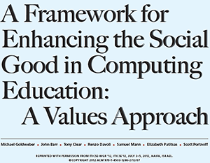

The page or area describing the risks posed by your chosen technology/topic. When writing the content for this page, make sure to include in-text citations to support your analysis, synthesis, and critique throughout.
Made 1 March 2021
thanks to W3C for tutorial and adapted code from Style Examples
also thanks to WDN for HTML and CSS resources and any adapted code snippets from Mozilla Developer Network